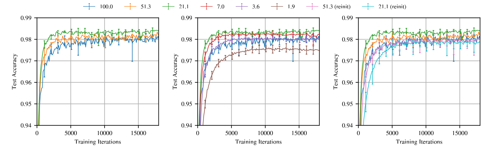

Ordinary pruning baseline
Train , prune small trained weights, then fine-tune . This shows that a learned function can often be compressed.
Frankle and Carbin · ICLR 2019
A dense network may hide a much smaller trainable route. The surprising part is not only which connections survive, but which random values those connections started with.
The learned mask chooses the route. The original initialization gives that route its starting point.
Prerequisite bridge · 0–7 min
You already know that gradient descent changes weights to reduce loss. Add one new object—a fixed binary mask—and you have the vocabulary needed for this paper.
Dense training gives every permitted weight a chance to move. Post-training pruning removes weights after the dense model has learned, usually keeping the survivors’ trained values. Sparse-from-start training begins with only a subset of connections and asks whether that smaller network can learn by itself.
The paper studies the third setting, but it uses dense training to search for the subnetwork. That time ordering matters: train dense, use trained magnitudes to choose a mask, restore the survivors to their original initialization, then train the masked network alone.
Problem and causal test · 7–15 min
Pruning had already shown that more than 90% of parameters could sometimes be removed from a trained network without harming accuracy. The unresolved problem was that the resulting sparse architectures were often difficult to train from a fresh random start. Keeping trained values confounds two explanations: the sparse topology may be good, or dense training may have placed its weights in a good state.
Frankle and Carbin break that ambiguity with a controlled comparison. They keep the discovered mask fixed and change only the values assigned to its surviving coordinates.
Train , prune small trained weights, then fine-tune . This shows that a learned function can often be compressed.
Use only to discover , restore , then retrain. This tests whether the sparse subnetwork was trainable from its original start.
The hypothesis. A randomly initialized dense network contains a much smaller subnetwork that, when trained in isolation from its original initialization, matches the dense network’s test accuracy in no more training iterations.
Symbols, shapes, architecture · 15–24 min
| Symbol | Shape | Role |
|---|---|---|
| The original random draw for all scalar parameters. Rewinding always returns surviving coordinates here. | ||
| The parameters after a training round. Their final magnitudes rank candidates for pruning. | ||
| A fixed binary mask. Coordinate survives; remains absent. | ||
| A layer’s matrix and its same-shaped mask. preserves input/output dimensions while removing individual connections. | ||
| scalar | The fraction remaining, . The paper calls this mask sparsity, while its labels report the percentage of weights still present. |
Lesson diagram
Mechanism and execution · 24–31 min
Sample one dense θ₀ and keep a copy.
Optimize to θT; every active coordinate may move.
Within the chosen scope, remove the smallest |θT,i| values.
Keep m, discard trained values, restore m ⊙ θ₀.
Compare speed and accuracy against the dense run and controls.
This ordering is the paper’s causal spine. Dense training supplies information for selecting the mask. Rewinding removes the learned values. Retraining asks whether the paired mask and original coordinates were already an effective starting subnetwork.
Work with eight toy weights below. The mask is selected by the smallest absolute values in θT. The numbers shown after pruning depend on whether you are inspecting the trained network or the ticket’s reset state.
Lesson diagram
Static reading. At the default setting, trained magnitudes cut coordinates 2, 4, 6, and 8. The retained trained values are not the ticket’s starting values; reset mode restores coordinates 1, 3, 5, and 7 from θ₀ while the others remain fixed at zero. This is a teaching example, not a paper result.
Worked calculations · 31–39 min
Result. . Neither nor a new random vector is the ticket start.
In a simplified equal-rate example, remove 20% of all current survivors each round, starting from 100,000 weights.
Result. Three 20% rounds leave 51.2%, not 40%. The paper’s Lenet labels differ slightly because it prunes the small output layer at half the rate of other layers.
Continue from the rewound ticket. Let and .
Result. Coordinates 2 and 4 remain zero; only survivors move. This is the conceptual SGD rule. A masked optimizer must likewise prevent pruned coordinates—or stale optimizer state—from making them reappear.
One-shot pruning trains once, removes the target percentage, rewinds once, and tests the subnetwork. It is cheaper to discover. Iterative magnitude pruning repeats train → prune a smaller fraction → rewind, producing nested masks . The paper focuses on the iterative version because it found smaller winning tickets, while explicitly noting the repeated-training cost.
Magnitude therefore has two jobs at different times: after a training round it ranks coordinates for removal; during the next round the resulting mask becomes a hard structural constraint.
Original evidence · 39–49 min
Original paper figure

The 51.3%- and 21.1%-remaining tickets rise sooner than the dense 100% run; 21.1% is fastest among these curves.
Below 21.1%, further pruning slows learning. At 3.6%, the paper reports a return to roughly the dense network’s learning speed; 1.9% is worse.
At the same 51.3% and 21.1% masks, fresh random values rise more slowly than matching original values, especially at 21.1%.
What the figure supports. In this Lenet/MNIST setup, moderate iterative pruning uncovers subnetworks that learn faster, and keeping the mask while randomizing surviving values erases much of that advantage. This supports the importance of the mask–initialization pairing.
What the figure does not support. It does not show that sparsity monotonically helps, that every sparse mask is trainable, or that random reinitialization always fails. It also does not make ticket discovery cheap: the mask was found using repeated dense or masked training rounds.
| Paper result | Exact scope | Careful interpretation |
|---|---|---|
| At about 21% remaining, the Lenet ticket reached minimum validation loss 2.51× faster and was 0.5 percentage point more accurate than its random reinitialization. | Lenet-300-100 on MNIST with the paper’s iterative-pruning and Adam setup. | The same discovered topology benefited from its matching original coordinates in this setting. |
| The abstract reports winning tickets below 10–20% of original size. | Several fully connected and convolutional feed-forward architectures on MNIST and CIFAR-10. | Broad empirical evidence inside the tested vision settings, not a universal theorem. |
| Deeper VGG-19 and ResNet-18 experiments required lower learning rates or warmup to expose strong tickets. | CIFAR-10, stated schedules, global convolutional pruning, and selected hyperparameters. | The discovery method is coupled to optimization; failure to find a ticket is not proof that none exists. |
Scope, limits, misconceptions · 49–53 min
Iterative magnitude pruning can expose sparse subnetworks whose original initialization lets them match the dense model’s speed and accuracy in the reported experiments.
The study covers MNIST and CIFAR-10, not ImageNet or language models. Architecture, data, optimizer, and schedule define the scope.
The authors note that iterative pruning can require training a network 15 or more times consecutively for multiple trials. Smaller retraining does not imply a cheaper end-to-end pipeline.
Removing scalar weights lowers parameter count, but the irregular pattern was not optimized for contemporary libraries or hardware. Parameter sparsity is not automatically wall-clock speedup.
The paper uses magnitude-based unstructured pruning. It does not show that this heuristic finds the smallest ticket or that final magnitude causally measures each weight’s usefulness.
For VGG-19 and ResNet-18, finding tickets depended on learning rate and warmup. The intervention is coupled to the training recipe.
No. A conventional pruned model usually keeps m ⊙ θT. A ticket must be reset to m ⊙ θ₀ and retrained successfully.
No. Random reinitialization keeps the mask and changes its starting values; it generally performs worse in the reported settings. Ticket identity is the topology paired with matching original coordinates.
The appendix evidence points the other way. Winning-ticket weights tended to move farther than other weights. Magnitude pruning may bias which changing weights survive, so this is not a complete mechanism.
No. Random reinitialization preserves the discovered mask and resamples its values. Random sparsity also changes which connections exist; the interventions answer different questions.
No. Dropout samples temporary masks during training. A ticket is one fixed, discovered mask paired with a specific initialization. The paper finds complementary behavior with dropout but does not equate the methods.
No. In ordinary language, 90% sparse often means 90% zeros, so 10% remains. In the paper’s plots, Pm is percentage remaining: Pm=10% corresponds to 90% pruned.
Active recall · 53–57 min
Answer: a binary connectivity mask and the matching surviving coordinates from the original initialization θ₀.
Answer: trained magnitudes in θT rank coordinates for pruning and thereby discover the mask.
Answer: it retains learned values and fine-tunes a compressed model; it does not test whether the originally initialized sparse subnetwork can learn alone.
Answer: , so 40.96% remains.
Answer: . The second coordinate remains absent.
Answer: moderate pruning accelerates the displayed winning tickets, but excessive pruning reverses the benefit and slows learning.
Answer: finding the network may require dense training plus many iterative train–prune–rewind rounds; discovery can cost more than one sparse run.
Connect it to your mental map · 57–59 min
Both use masks. Dropout resamples temporary masks as regularization; a ticket is one fixed mask discovered with training evidence and paired with exact initial values.
The mask decides which coordinates exist. The optimizer decides how active coordinates move. The paper finds tickets across optimizers, but the accessible sparsity range depends on the recipe.
Residual architecture deliberately supplies identity paths. The ticket view asks which scalar paths inside an overparameterized network were sufficient; the ResNet-18 result also exposes warmup sensitivity.
Distillation trains a smaller student to imitate a teacher’s behavior. Ticket pruning searches inside the original parameterization for a sparse subnetwork; it does not transfer soft targets to a separate student.
Takeaway · 59–60 min
Dense training can act as a search over subnetworks. Magnitude pruning reveals a candidate route; rewinding restores that route’s original coordinates; retraining tests whether the paired mask and initialization could learn alone. Remember the ticket as where the connections are + what those exact connections started as—and keep discovery cost separate from training or inference cost.